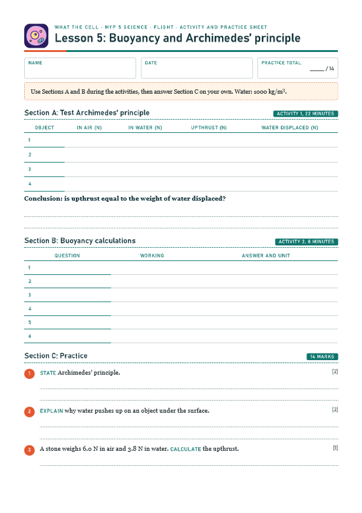

By the end of the lesson you can
- Explain why fluids push up on objects
- State Archimedes' principle
- Calculate the buoyancy force and the apparent weight
- Test the principle with a newton meter and a displacement can
Keys: arrows or a presentation clicker move the slides, F for full screen. Slides with a red dot have a video or simulation.
Videos (all 5 minutes or less)
- 3:01
How taking a bath led to Archimedes' principle
TED-Ed. While you watch: What problem was Archimedes trying to solve? Slide 10.
Simulations
- Lab
Flight Lab
What the Cell. Open Buoyancy: hang a block on the newton meter and lower it into the tank.
- PhET
Print and practise

Activity and practice sheet
Used in the lesson’s activities, with practice questions. Your teacher has the answers.
Download (PDF)Lesson 5 slides
All 21 slides in one file, to read again or print. The video buttons on the slides open YouTube.
Download the slides (PDF)Revising? The Revision tab on the unit page has the unit notes and review.
Class activity pack
Everything to print for the lesson’s activities: picture cards, sorting mats, station cards with their kit lists, and the teacher’s set-up notes. Print it before class.
Download the activity pack (PDF)Notes: Buoyancy and Archimedes' principle
upthrust
The upward force on an object in a fluid, caused by the pressure difference between its top and bottom. For example: also called the buoyancy force.
buoyancy in air
Upthrust = 1.29 × 9.8 × V for air at sea level. For example: V = 0.8 m3: about 10 N.
Key words
| upthrust | upward push of a fluid (buoyancy force) |
|---|---|
| Archimedes' principle | upthrust = weight of fluid displaced |
| upthrust = rho g V | upthrust from fluid density and volume |
| displaced fluid | fluid pushed aside by the object |
| apparent weight | real weight - upthrust |
| newton meter | measures force in N |
| submerged | completely under the surface |